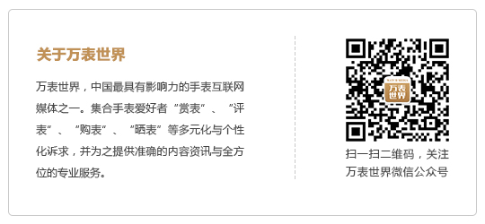

如何衡量一款手表的价值?相信仅凭直觉或者个人爱好得到的结果一定不是客观的。为了方便大家今后做手表测评，万表世界总编刘兴力老师联合钟表界的其他资深人士共同拟定了以下量化测评标准：
第一部分：机芯复杂机构1、机芯功能
| 得分项 |
分值 |
备注 |
| 手动无日历/手动日历 |
5 |
|
| 自动大三针日历/无日历 |
8 |
|
| 满仓机芯 |
3 |
|
| 全历（指针或小窗口） |
10 |
|
| 月相 |
3 |
|
| 两地时 |
2 |
|
| 世界时 |
5 |
|
| 飞返全历 |
3 |
|
| 大日历 |
3 |
|
| 动力显示 |
2 |
|
| 长动力 |
3 |
3日以上10日以下动力存储 |
| 长动力 |
5 |
10日以上动力存储 |
| 自动上弦 |
3 |
|
2、复杂功能：
| 得分项 |
分值 |
备注 |
| 响闹 |
4 |
|
| 逆跳 |
4 |
逆跳月，逆跳星期，逆跳日期 |
| 跳时 |
3 |
|
| 恒力擒纵 |
8 |
|
| 陀飞轮 |
10 |
|
| 卡罗素 |
10 |
|
| 年历 |
5 |
|
| 万年历 |
15 |
|
3、复杂计时功能：
| 得分项 |
分值 |
备注 |
| 时间等式 |
20 |
|
| 计时 |
7 |
非柱轮 |
| 计时 |
10 |
柱轮 |
| 二问 |
15 |
刻问、五分问 |
| 三问 |
30 |
|
| 四问 |
50 |
日期问Date Repeater |
| 小自鸣 |
25 |
|
| 大自鸣 |
35 |
|
| 超薄 |
4 |
|
4、机芯打磨：
| 得分项 |
分值 |
备注 |
| 机芯初级打磨 |
1 |
Eta和其他产区的量产未打磨机芯 |
| 机芯优质打磨 |
2 |
伯尔尼产区精致打磨 |
| 机芯优质打磨 |
3 |
洳山谷产区打磨 |
| 日内瓦印记 |
4 |
日内瓦产区/弗勒里耶产区 |
第二部分：表壳材质及修饰
| 得分项 |
分值 |
备注 |
| 钢表壳 |
5 |
|
| 特殊钢 |
6 |
|
| 其他非贵金属 |
7 |
钛、铝、铜 |
| 贵金属 |
10 |
K金 |
| 高纯贵金属 |
12 |
铂、钯 |
| 镶嵌 |
1 |
K金 |
| 镶嵌 |
2 |
钢 |
| 宝石粘贴 |
0 |
|
| 特殊手工艺 |
2 |
|
第三部分：表壳结构及打磨
| 得分项 |
分值 |
备注 |
| 传统结构表壳 |
1 |
|
| 旋转式表圈 |
1 |
|
| 多件式表壳 |
3 |
|
| 单一打磨 |
1 |
（单纯抛光/拉丝） |
| 复合打磨 |
2 |
（抛光+拉丝） |
第四部分：表背结构表背结构按照蓝宝石镜片、猎表式后盖分别给1分、2分的分值。
第五部分：防水性能
| 得分项 |
分值 |
备注 |
| 生活防水 |
0 |
50米以下 |
| 一般防水 |
1 |
50米以上100米以下 |
| 游泳 |
2 |
100米以上200米以下 |
| 潜水 |
3 |
200米（含）以上 |
| 潜水 |
3 |
300米（含）以上 |
| 超级潜水 |
4 |
1000米以上 |
第六部分：表盘
| 得分项 |
分值 |
备注 |
| 特殊材质表盘 |
1 |
|
| 珐琅工艺表盘 |
2 |
|
| 玑镂/雕刻表盘 |
2 |
|
| 其他特殊工艺 |
2 |
拼贴、刺绣、羽毛 |
| 镂空 |
2 |
|
为了方便大家更加清楚我们的测评体系，我们用两款计时码表举例评分加以说明。一款是号称“小PP”的Paul
Picot限量版Lemania 1872机芯码表，另外一款则是泰格豪雅的Carrera 1887。
| 得分项 |
Paul
Picot限量版Lemania 1872机芯码表 |
泰格豪雅Carrera1887 |
| 机芯功能 |
手动无日历/手动日历，5分 |
自动大三针日历/无日历，8分 |
| 计时 |
非柱轮计时，7分 |
柱轮计时，10分 |
| 优质机芯打磨 |
洳山谷产区打磨，3分 |
伯尔尼产区打磨，2分 |
| 表壳 |
钢表壳，5分 |
钢表壳5分 |
| 表背结构 |
蓝宝石镜片，1分 |
蓝宝石镜片，1分 |
| 防水 |
一般防水（50米以上100米以下），1分 |
游泳（100米以上200米以下），2分 |
| 表壳 |
传统结构表壳，1分 |
传统结构表壳，1分 |
| 总分 |
23分 |
29分 |
从上面的表格我们可以清晰看到Paul Picot(柏高)和豪雅得分的差别，自动上弦、柱轮计时、防水，豪雅的得分均高于柏高，而机芯打磨上柏高则更胜一筹。
 Paul Picot限量版Lemania
1872机芯码表
Paul Picot限量版Lemania
1872机芯码表
 泰格豪雅Carrera1887
泰格豪雅Carrera1887
这里需要说明的是，测评体系关于手表外观部分的标准还没有出笼，所以Paul
Picot(柏高)在外观方面的优势没有显现。柏高的这款限量400只搭载PP1872机芯的腕表，由于此前测评体系里没有针对限量版腕表给出分值，优势没有体现在总分中。不过测评小组最新的测评标准现在可以加上，那就是限量版加1分。这样的话，小pp又可以多得一分了。
当然，腕表不仅仅是单纯的时计，它更多地承载了文化甚至表达了一种情怀。而关于文化，个人认同之间的差别很大，我们还没有找到具体标准。
【鸣谢】在这个体系的起草中做过重要贡献的部分网友有：52Tourbillon，王雷，催枪问谁，米川，四轮时间背包客，刘永超，饶宽，其他参与的专业编辑和网友就不在这里一一列出了。对于大家的贡献，万表世界在此表示感谢。
